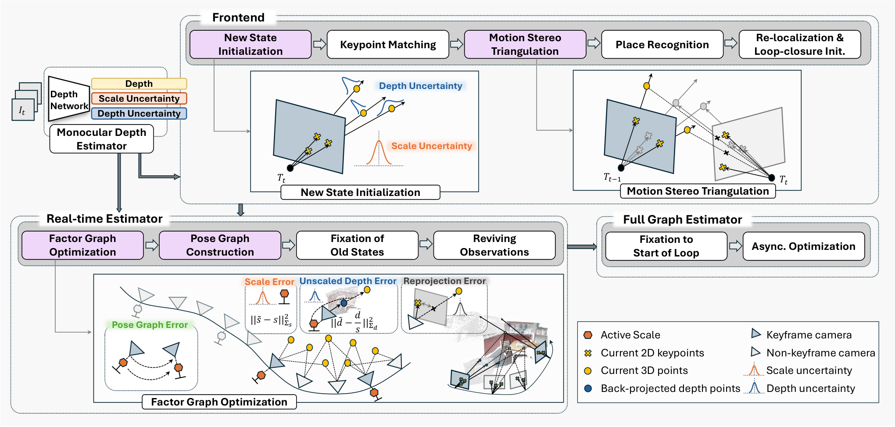
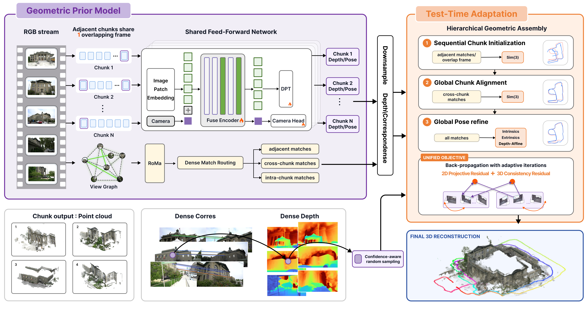
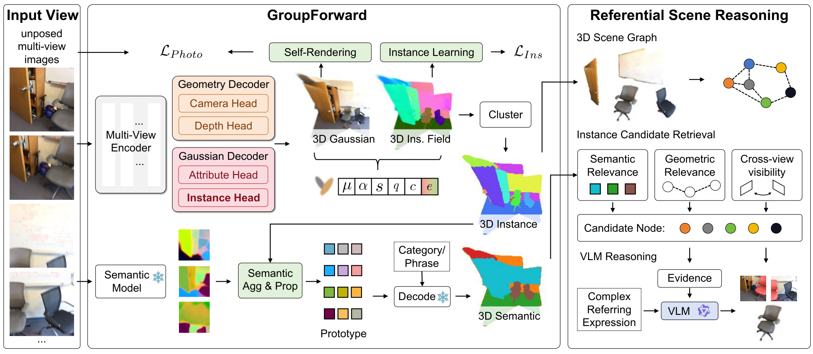
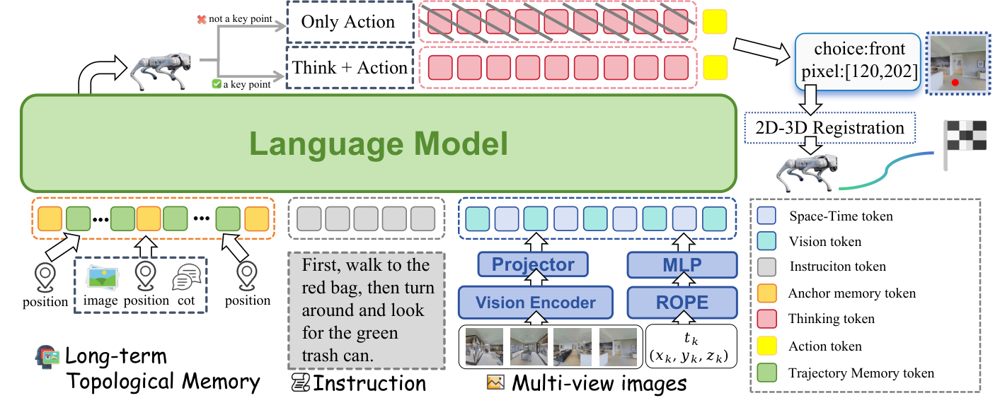
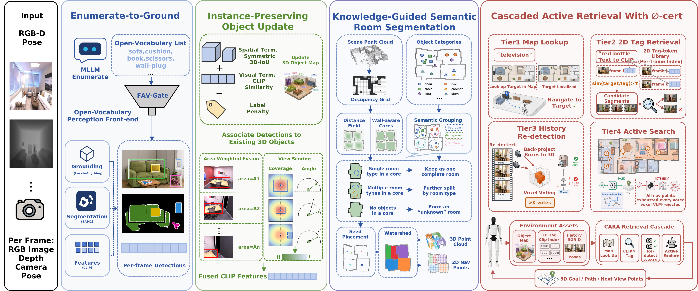

Executive Summary
最值得跟进的是“学习先验 + 显式几何约束”的组合，而不是再做一个纯前馈端到端系统。 Scalix 把单目深度的逐帧尺度与像素不确定性放进因子图；GeoWeaver 把 chunk 级先验视为可调整量，通过 Sim(3) 对齐和帧级优化修复长序列漂移。两篇的消融都显示，显式优化阶段贡献了主要精度增益。
3D 表示正在从“可渲染”转向“可引用、可检索、可决策”。 GroupForward 用 8 维实例嵌入代替逐 Gaussian 的高维语义特征，并在实例图上做指代表达推理；OVIP-SG 则把小实例保持、功能区域和分级主动检索接成服务导航链路。但 OVIP-SG 公开代码尚未兑现，工程结论只能来自论文全文。
工程侧最有价值的负面结论是：GPU 移植不天然更快，世界模型/4D 重建也不能只看论文标题。 Jetson-ORB-SLAM3 在 KITTI 分辨率上端到端快 11.5%，但在 EuRoC 分辨率上 CPU 仍更快；Depth Anything V4 在发布两天后因“研究存在重大错误”撤稿，所有指标只能作为撤稿元数据记录，不能进入趋势结论。
Deep-read Papers
| 论文 | 系统/框架图 | 解决的问题 | 方法 / 结构 | Insight 与数学知识 | 实验与效果 | 复现与启发 | 阅读证据 |
|---|---|---|---|---|---|---|---|
| Scalix Monocular SLAMFactor Graph |
 Fig.2：深度/尺度不确定性进入前端初始化、实时因子图与全图优化。 |
单目 SLAM 的全局尺度不可观与长程尺度漂移；直接使用 foundation depth 的逐帧尺度不一致会把错误深度当成强测量。 | 基于 OKVIS2，把每个关键帧的尺度 s 加入状态；Metric3Dv2 增加逐帧尺度不确定性头与逐像素深度不确定性头。前端用 s·d 初始化 landmark；后端联合最小化重投影、未缩放深度、尺度先验与 pose-scale graph 残差，边缘化后保留相对尺度。 | 总度量深度协方差写成 Σ_dm = Σ_s ddᵀ + s²Σ_d，用 Sherman–Morrison 化简多元高斯 NLL，避免稠密协方差求逆。核心判断是把“深度误差”拆成全图相关的尺度误差与局部像素误差，再让多视图数据关联校正尺度。 |
KITTI 仅用左 RGB：作者报告 Sim(3) 平均 ATE 4.60 m、SE(3) 7.19 m；相对 CUT3R 的 Sim(3) 结果改善 37%，相对同用 Metric3D 的 DROID+M3D 的 SE(3) 结果改善 40.4%。全 BA 后为 3.87/7.22 m。7-Scenes 全 BA 为 7.8 cm（Sim(3)）/11.5 cm（SE(3)），但室内仍略逊 DROID-SLAM、ViSTA-SLAM、MASt3R-SLAM。scale optimization 消融显示平均 SE(3) ATE 从 58.01/62.67 m 降至 7.19 m；但 KITTI 01 有一次失败，稳定性仍需多次运行。 | 训练不确定性头需 ScanNet+Waymo、单 L40S 一天；SLAM 实验用 i7-13700+RTX 3080，但论文强调实时估计在 CPU 端。未发现公开代码。值得尝试将这种“共享尺度随机变量”迁移到 chunk-SfM、3DGS-SLAM 与多传感器尺度校准。 | 全文级。 阅读 Intro、Metric Depth Decoupling、Scale-aware SLAM、KITTI/7-Scenes、runtime、ablation、Conclusion；视觉确认 Fig.2。未读/未运行代码。 |
| GeoWeaver Long-sequence 3DTTA |
 Fig.2：chunk 几何先验、稠密匹配路由与三级 TTA。 |
前馈 3D 模型无法把长序列一次放进显存；分块又会产生 chunk 间尺度、位姿、深度和内参漂移。 | GPM 基于 Depth Anything 3，以一帧重叠的 60 帧 chunk 预测深度、置信度、pose、FoV。TTA 分三阶段：相邻 chunk 顺序初始化；全局 chunk Sim(3) 对齐；帧级 SE(3)、仿射深度与 focal correction 联合精修。SALAD 检索长程候选、GEP 选稀疏连通图、RoMa 给稠密对应。 | 统一目标同时使用 2D 重投影和世界坐标 3D 一致性。不是最小化平均残差，而是用多阈值 logistic CDF 目标，使更大比例对应落入低残差区，降低宽基线结构化外点的影响。优化自由度按“chunk → frame”逐级放开，是显式置信度排序。 | Tanks & Temples 消融：仅顺序初始化 ATE 0.674/AUC@3° 24.4；加 chunk 对齐到 0.075/43.8；完整帧级精修到 0.023/72.9。相同 TTA 将 Scal3R ATE 0.338→0.033、DA3 0.358→0.033。主实验覆盖 Tanks & Temples、Mip-NeRF 360、Virtual KITTI 2、Oxford Spires；作者报告前两者平均 ATE 最低、VKITTI2 第二、Oxford Spires RRE 最低。TTA 约 100 次迭代降一半目标，约 440 次趋于收敛。 | 限制很明确：额外 matching/TTA 成本、静态场景、固定每相机焦距、非实时。项目页公开结果与视频，但“Code”当前无可点击仓库。工程上可先复用 TTA 到既有 DA3/Scal3R 先验，而非重训 GPM。 | 全文级。 阅读 Method、GPM/TTA/目标、四套数据、主结果、消融、Appendix 的优化/指标、Limitations；视觉确认 Fig.2。无代码可核验。 |
| GroupForward Feed-forward 3DGSReferential 3D |
 Fig.2：实例分组前馈 3DGS 与场景图/VLM 指代推理。 |
高维语义特征逐 Gaussian 存储昂贵，且类别/短语相似度不足以处理“桌旁靠门的第二把椅子”这类复杂指代表达。 | VGGT 多视图编码器分出 geometry decoder 与 Gaussian decoder；每个 Gaussian 附加 8 维 instance embedding，再聚类为跨视图实例组。语义特征按实例聚合为 prototype。RSRF 构建含 3D/2D 几何、可见性和邻接关系的实例图，先检索 top-8 候选，再让 Qwen3-VL-8B 使用结构化关系与多视图证据选目标。 | 中间变量从“逐 primitive 语义向量”改成“持久 3D 实例实体”，把渲染、语义传播和语言推理统一到同一分组。gauge-aligned self-rendering 用预测相机做自监督；课程学习先稳定几何与 pose，再学习实例，避免语义监督污染早期几何。 | ScanNet/Replica：零样本 Replica（2/4/6/8 views 平均）mIoU 0.5633、PSNR 27.26，Uni3R 为 0.4754/23.03。复杂指代 novel-view segmentation mIoU 0.6496，Uni3R 0.2538、Sa2VA 0.5012。消融默认 mIoU 0.5989；去 instance embedding 为 0.5479；去课程学习为 0.4669 且 PSNR 26.23→18.92，说明训练顺序是主要稳定器。作者协议中的自建指代表达集需独立审查。 | 两视图每阶段约 50k iter，约 30 小时/阶段，硬件 8×A100 80GB；多视图还需 50k fine-tune。RSRF 单 A100。未发现公开代码或权重，因此无法验证语义分组/表达生成协议；短期更适合验证 8 维实例嵌入的存储—精度折中。 | 全文级。 阅读 Overview、instance grouping、RSRF、训练协议、ScanNet/Replica、referential evaluation、ablation、Conclusion；视觉确认 Fig.2。未发现代码。 |
| Embodied-Navigator / TAMP-Nav VLNGRPO |
 Fig.1：像素动作、稀疏思考、锚点轨迹记忆与 2D→3D 执行。 |
VLM 被迫回归 3D waypoint/原子动作时偏离其 2D 预训练分布；逐步 CoT 成本高，稀疏采样又丢长程拓扑。 | Qwen2.5-VL-7B 在四个 90° RGB 视图上选 view+pixel，借 depth 与内参投影到 3D，再交给固定 SLAM controller。Anchor-Trajectory Memory 在关键节点保存视觉、CoT、STI，普通段只保留用 RoPE 编码的 (x,y,time,yaw) token。SFT 冷启动后 Two-Level GRPO 叠加 step 与 trajectory advantage。 | 动作空间本身是一种“能力对齐”：让 VLM 做它擅长的 2D grounding，把 metric geometry 交给确定性模块。局部 reward 包含接近目标、避碰、停止、推理价值、格式；全局 reward 包含成功、SPL、推理密度。STI 对 yaw 用 (sin,cos) 消除 0/360° 不连续。 | R2R-CE val-unseen SR 66.2/SPL 58.8，RxR-CE SR 65.7/SPL 56.9；SFT-only SR 分别 55.7/52.4。自适应 CoT 仅 26.3% steps，SR 66.2，dense CoT 为 100%/66.8。长程子集 5,927 条：AT-Mem SR 49.8，full history 42.4。深度噪声 σ=0.2 时 SR 63.4（无噪 66.2）。100 次真机 trial 零样本 SR 60%，StreamVLN 49%、DualVLN 53%。 | 论文明确依赖 privileged simulator reward、depth、odometry 与可靠 SLAM；STI 只有平面位姿，不能区分楼层。代码实质性公开，但完整 90k 数据、Matterport3D assets、checkpoint 分开发放；README 的若干命令/文件名与树不一致，复现仍需手动对齐。 | 全文+代码级。 阅读数据、三模块、主实验、噪声、消融、100-trial 真机协议、Limitations；视觉确认 Fig.1；静态检查公开 repo，未运行。 |
| OVIP-SG Semantic MappingActive Retrieval |
 Fig.2：E2G、实例保持、功能区域与四级主动检索。 |
开放词汇 object map 容易把附着/小物体吞并进家具；map-only 系统也无法处理未建图、未标记或确实不存在的目标。 | E2G 先用 VLM 枚举词表，再由 LocateAnything、SAM2、CLIP grounding；FAV-Gate 过滤低频词。IPSM 用对称 3D IoU，LAMP 加标签不一致惩罚，area-weighted fusion 优先大且居中的观测。KGSW 以几何 watershed 为边界、VLM 功能类别拆分开放区域。CARA 从 map lookup、2D tag、history re-detection 升级到主动搜索，并可给出 coverage-conditioned 空集判断。 | 把“不存在”建模为搜索预算耗尽后的条件性决策，而不是默认目标存在。关联评分结合 3D IoU、CLIP cosine 与 label penalty；主动检索按 VLM 区域先验与 geodesic distance 调度，3D voxel vote 后再 VLM 复核。 | Replica 同一 evaluator：mAcc 45.00→51.31，F-mIoU 56.30→61.45；instance PQ 0.338→0.398。小类 swallowed recall 15.8→43.2。HM3D 同 stack 22 个 present query：CARA SR 0.605±0.011，CLIP 0.576±0.021，但 CARA SPL 0.339 低于 0.384；附录明确称这不足以证明稳健的 present-navigation 增益。强制 Tier-4 的 44 条平衡测试：present sensitivity 0.909、annotation-referenced absence accuracy 0.636，且 8 个严格 FP 的 crop 都含目标样内容，说明 GT 本身不完备。 | 论文称代码/评估资源可用，但 Agibot-Spatial-Intelligence/OVIP-SG 当前只有 README，另一论文链接组织返回 404；因此不能核验配置与实现。真机只报告完整系统 SR 和相对 +0.08，缺乏足够 episode 细节。值得跟进的是 conditional absence 的评测协议，而非当前 SOTA 排名。 |
全文级，代码证据不足。 阅读 Method、Task A/B、实机、Appendix 全协议/消融/严格负例；视觉确认 Fig.2。公开 repo 仅占位。 |
| Jetson-ORB-SLAM3 Edge SLAMCUDA/TensorRT |
Fig.1 caption 与 HTML 明确为 architecture，但 arXiv HTML 中没有独立可下载图片资源，因此未嵌入，避免把表格或局部图误当总览。 | Jetson 上 ORB front-end 与 loop closure 成本高；既有 GPU port 用近似 detector 换速度，改变 feature set，可能改变整条轨迹。 | 完整 CUDA 重写 pyramid、FAST、跨尺度 NMS、orientation、steered rBRIEF，并保持参考算法的 keypoint selection。CPU 保留 mapping/BA。CosPlace ResNet-50 经原生 TensorRT FP16 执行；DBoW2 是默认 fallback。 | 可验证目标不是“视觉上相似”，而是 feature/trajectory 两层等价：205 帧上 94.7% keypoint 完全位置/尺度/octave 一致，descriptor bit 99.9% 一致；再用 2 hardware × 2 implementation 矩阵分离硬件与 port 影响。工程上强调 roofline 式 crossover：低分辨率 kernel launch/transfer overhead 可吞掉 GPU 收益。 | EuRoC GPU/CPU 同 Orin 平均差 0.27 cm；四配置平均 ATE 跨度 0.10 cm。mono-inertial 32.0 FPS；stereo-inertial baseline 14.4 FPS，重叠 extraction 后 28.0 FPS。KITTI 1241×376 上 GPU 端到端比 CPU 快 11.5%，EuRoC 752×480 反而 CPU 更快。CosPlace 原生 TensorRT 2.2 ms/query，相对嵌入式 CPU 约 396 ms 为 180×；但 EuRoC loop-closure ablation 显示 CNN 对准确率中性，价值是可部署性而非精度。 | 公开 repo 含 479 个 tree item、CUDA kernels、prebuilt JetPack 6 库与一键 EuRoC 脚本；TUM-VI 辅助数据、CosPlace ONNX/engine 不随 repo。仅 2 stars、创建不足一周，仍是早期 release；需要 Orin/JetPack 6 才能真实验证。 | 全文+代码级。 阅读 System、三套数据、运行时、loop ablation、Observations、Conclusion；静态检查 CMake、CUDA、LoopClosing、run_euroc；未在 Orin 上执行。 |
{kind=link}
{kind=link}
{kind=link}
{kind=link}
{kind=link}
Repo Deep Dives
| Repo | 目标与能力 | 代码结构证据 | 依赖 / 硬件 | 成熟度判断 | 领域关系 |
|---|---|---|---|---|---|
| Jetson-ORB-SLAM3 2026-08-23 快照：2 stars / 0 forks；479 tree items；last push 2026-08-19。 |
ORB-SLAM3 的参考等价 GPU ORB front-end，加可选 CosPlace/TensorRT loop retrieval；提供 EuRoC 一键下载、运行与 SE(3) ATE 计算。 | src/cuda/ 含 FAST、NMS、pyramid、orientation、descriptor、stereo match；src/ORBextractor_gpu.cpp 连接前端；src/LoopClosing.cc 含 TensorRT/CNN candidate path 与 DBoW2 fallback；run_euroc.sh 检查 prebuilt、可切 CPU_ORB/PIPELINE_FE 并计算 ATE。代码与论文结构一致。 |
Jetson Orin、JetPack 6、CUDA/cuBLAS/TensorRT/OpenCV；源码构建还需 Eigen/Pangolin。prebuilt 避免约 45 分钟 CUDA build。CNN 需外部 CosPlace ONNX，并在目标板生成不可移植的 FP16 TensorRT engine。 | 早期但可执行性较好。 有单命令 demo、prebuilt、明确 fallback 与校验；只有两个主要 commit、没有 release/tag/CI 证据，TUM-VI 数据侧文件缺失。作者实验未被本地复现。 | 对嵌入式 VIO/SLAM 工程很直接：展示“算法等价性 + 系统软件固定 + 分辨率 crossover”的评价方式。 |
| Embodied-Omni / embodied_navigator 221 stars / 19 forks；703 tree items；last push 2026-08-22。 |
从数据生成、SFT、Two-Level GRPO、Habitat evaluation 到 FastAPI/ROS2 真机服务的完整 VLN 路线；另提供 Hugging Face checkpoint 与 6 段真机视频。 | src/agent/dthink_pixel_agent.py 实现 pixel action/上下文；src/train/grpo_reward.py 含 success、trajectory similarity、reasoning density、collision、approach、reasoning、stop、format rewards；grpo_train.py 显式注册 trajectory/step reward；src/server/ 含 FastAPI 与 Unitree Go2 ROS2 client；config 中 8 trajectories、每步 4 candidates、4096/512 token 上限、step/traj coefficient 均为 1。 |
Python 3.10+、PyTorch、Habitat-Lab、Transformers、Qwen2.5-VL；训练配置使用 bf16、DeepSpeed ZeRO-2、W&B。真机链依赖 D435i、Hesai LiDAR、FastLIO、FAR Planner、ROS2。checkpoint、完整数据与 Matterport3D assets 分发在外部。 | 代码面较完整，安装面仍粗糙。 实际 tree 有训练/eval/server 核心模块，但 README 引用的 requirements.txt、CLAUDE.md、scripts/sft_train.sh、grpo_train.sh、evaluate.sh 与递归 tree 不一致；实际脚本是 sft_dthink_7b.sh、grpo_dthink_7b.sh、run_evaluate.sh。License 区也仍写“will be added”，与仓库顶层 MulanPSL-2.0 不完全同步。 |
连接 VLN、SLAM controller、真实机器人服务；最值得复用的是 reward 分层与明确失败视频，而不是直接照抄 README 命令。 |
| Gaussian-JEPA 24 stars / 2 forks；123 tree items；initial public release 2026-08-16。 |
针对 3D Gaussian asset 的自监督 latent prediction；覆盖预训练、ModelNet transfer、ShapeNet part segmentation、partial retrieval、resampling consistency 与 Gaussian completion。 | models/Gaussian_JEPA_ExpMultiScale.py 有 4 个异构非重叠 target block、EMA teacher、context 单次编码、geo/app projection 与 grounding loss；tools/runner_pretrain.py 管训练；smoke_test_release.py 检查 CUDA extension、strict checkpoint load、有限 loss 与 backward；completion_gs/、segmentation_gs/ 是独立下游入口。 |
Python 3.9、PyTorch 2.0.1、CUDA 11.8；pointnet2_ops 与 knn_cuda 需本地编译。数据来自 ShapeSplatsV1/ModelNet Splats，需接受条款；checkpoint 尚未公开，README 只约定本地路径。 | 研究 release 较规范但尚不闭环。 有 model card、validation docs、结果拆分、smoke test 与下游代码；没有 checkpoint，无法按 README 完成 strict-load smoke test。CC-BY-SA-4.0 用于代码也需下游注意兼容性。 | 不是 SLAM 系统，而是 3DGS 表征学习基础件；可用于跨重采样资产检索、局部观测鲁棒表示与后续动态/机器人资产编码。 |
Quantitative Experiment Highlights
| 来源 | 数据集 / 场景 | 指标 | 结果 | 解释边界 |
|---|---|---|---|---|
| Scalix | KITTI 单目 RGB | RMSE ATE，Sim(3)/SE(3) | 平均 4.60/7.19 m；full BA 3.87/7.22 m；相对 CUT3R Sim(3) 结果作者报告改善 37%。 | 序列长度差异大，作者把 ATE > 3% 序列长度视为 failure；3 次运行中 seq.01 有一次失败。 |
| GeoWeaver | Tanks & Temples | ATE / AUC@3° | 顺序初始化 0.674/24.4 → chunk alignment 0.075/43.8 → frame refinement 0.023/72.9。 | 这是作者消融；TTA 增加 matching 与迭代成本，非实时。 |
| GroupForward | Replica zero-shot | mIoU / PSNR | 0.5633 / 27.26；Uni3R 0.4754 / 23.03。 | 训练于 ScanNet；结果按 2/4/6/8 输入视图平均，未独立复核数据处理。 |
| GroupForward RSRF | 自建 complex referring evaluation | novel-view mIoU | 0.6496；Sa2VA 0.5012；Uni3R 0.2538。 | 表达生成与 GT 协议未公开代码，不能外推到通用 3D 指代。 |
| Embodied-Navigator | R2R-CE / RxR-CE val-unseen | SR / SPL | 66.2/58.8；65.7/56.9。SFT-only SR 为 55.7/52.4。 | GRPO 使用 privileged simulator signals；完整系统还依赖 depth/odometry/SLAM。 |
| Embodied-Navigator | 100 次真实机器人 trial | SR | 60.0%；StreamVLN 49.0%；DualVLN 53.0%。 | 完整系统对比，各方法低层感知/控制配置不完全同构；只发布 6 段代表视频。 |
| OVIP-SG | Replica / HM3D | mAcc / F-mIoU；navigation SR/SPL | 51.31/61.45（ConceptGraphs 45.00/56.30）；CARA 0.605/0.339，CLIP 0.576/0.384。 | CARA 的 SR 较高但 SPL 较低，附录明确不支持稳健 present-navigation 增益。 |
| OVIP-SG Tier-4 | HM3D，44 条强制主动搜索 | sensitivity / absence accuracy | 0.909 / 0.636；negative-decision precision 0.875。 | 严格 FP 的 crop 均含目标样内容，指标主要反映与不完备语义 mesh 标注的一致性。 |
| Jetson-ORB-SLAM3 | EuRoC / KITTI | ATE 差；FPS；端到端时间 | GPU/CPU 平均 ATE 差 0.27 cm；mono-inertial 32 FPS；stereo pipeline 28 FPS；KITTI GPU 快 11.5%。 | EuRoC 较小分辨率上 CPU 反而更快；加速依赖分辨率与 launch overhead。 |
Supplemental Tracking Papers
| 论文 | 方向关系 | 解决的问题 | 方法 / 结构 | Insight 与数学知识 | 实验 | 证据级别与后续动作 |
|---|---|---|---|---|---|---|
| Gaussian-JEPA | 3DGS 表征学习 | 重采样会改变 Gaussian primitive 实现，masked attribute reconstruction 过拟合单次采样。 | online context encoder + EMA target encoder，预测 held-out multi-scale Gaussian token block 的 latent projection，不解码属性。 | stop-gradient teacher 与联合 embedding prediction；把 3DGS 资产视为多种等价 primitive realization 的观测。 | 摘要称在重采样一致性、partial retrieval、completion、part segmentation、classification 上优于 matched reconstruction pretraining。 | 摘要+代码级，未读全文。 Repo 已深查；待 checkpoint 发布后跑 smoke test。 |
| RoofGS | 3DGS 渲染加速 | 高分辨率前端 memory-bound、rasterizer instruction-bound，单一优化无效。 | 32-bit 自适应深度排序 key；受 opacity culling 范围约束的 bit-level exponential approximation；再叠加 fusion/compact storage/culling/dual-pixel。 | 按 roofline 瓶颈分别优化 memory traffic 与 instruction throughput，并给近似指数的 per-pixel error bound。 | 摘要称 RTX 4090 4K 从 61 到 616 FPS（10.1×），PSNR 仅降 0.028 dB。 | 摘要级，未深读全文。 应核验端到端是否包含排序/数据准备及不同 GPU 的 crossover。 |
| GS-CPE | 3DGS localization | pose regression 泛化与精度难兼得。 | retrieval-guided geometric coarse pose，再用 3DGS 可见性 mask 的多尺度 RGB warping objective 做 refinement 和 adaptive re-render。 | 把可微渲染作为 photometric pose optimizer，而 3DGS 兼任 scene representation。 | 摘要称在 7Scenes、Cambridge、FAST-LIVO2 与自建数据上优于现有方法。 | 摘要级，未深读全文。 需核验初始化失败率、优化步数与 scene-specific 3DGS 建图成本。 |
| LaGSplat | 3DGS world model / physics | 从单/少量 monocular video 推断可受外力交互的物体动态。 | 低维 latent q 同时作为耗散 Lagrangian 的 generalized coordinate 与 GS decoder condition；图像外力经 Jacobian 转成 J(q)ᵀf。 | 显式点 primitive 让外力可从像素空间 pull back 到 generalized force；Euler–Lagrange 先验以限制泛化换稳定响应。 | 摘要称覆盖刚体/形变、真实系统与任意未见外力，实时 2D/3D 渲染。 | 摘要级，未深读全文。 需看传感器监督、外力 GT、latent dimension 与长时稳定性。 |
| OccamView | 机器人主动 3DGS | 纯几何 NBV 在有限 frame budget 下忽略物体遮挡后的局部空洞。 | 开放词汇 object memory + RGB-D 测量附近的保守 hidden-region proxy；Geo-Floor 只对几何上有竞争力的候选做对象条件重排。 | 不做 shape completion，只用观测支持的局部 occupancy proxy，避免凭空预测对象几何。 | 摘要称 Replica/Matterport3D 五个预算下改善 Completion/Completion Ratio，低预算收益更明显。 | 摘要级，未深读全文。 后续核验 proxy 误报、open-vocab detector 开销与路径成本。 |
| SplatGuide | pose-free NVS | 3DGS+diffusion 组合只消费 render 或 feature，浪费 visibility 信息。 | 同一 3DGS 前向同时提供 pixel conditioning、按 Gaussian source index 渲染的遮挡感知 reference voting map、reconstruction token cross-attention。 | 单一 scene representation 跨像素、可见性、feature 三层复用。 | 摘要称覆盖 RE10K、DL3DV、T&T、Mip-NeRF360，并在 RE10K 中等输入视图数超过 GT-pose baseline。 | 摘要级，未深读全文。 需核验 GT-pose baseline 的生成设置与前馈重建成本。 |
| UniQuery4R | Feed-forward 4D | 动态重建为不同 source-target pair 重复编码，且 dense head 浪费稀疏 query 计算。 | 多帧 clip 编码一次；解码时再指定 source view、target view、连续 source pixel，联合预测 correspondence、target-time 3D、scene flow、source depth。 | query-conditioned decoder 让同一编码支持 sparse 与 batched dense inference；scene flow 分解为 direction/magnitude。 | 摘要称 WorldTrack 的 scene flow 与 dynamic-point reconstruction macro-average 最佳。 | 摘要级，未深读全文。 需看 query batching 的实际复杂度与相机估计误差传播。 |
| Exposing the Long-tail in Embodied Urban Navigation | 真实城市导航 | 任务专用采集昂贵，安全关键长尾覆盖不足。 | 从 web-scale egocentric video 自动标注 metric trajectory 与结构化导航语义，训练可解释 VLA policy，并按性能/感知-运动分布诊断长尾。 | 把长尾定义成可测的 perception-motion pattern，而不是只列失败案例。 | 摘要称在 web video 与真实城市任务上有知识迁移并发现一致长尾结构，未给具体数值。 | 摘要级，未深读全文。 需核验轨迹标注误差、数据许可与真实安全协议。 |
| CondVLN | VLN diagnosis | 标准 SR 无法判断 agent 是否根据环境条件选择了正确逻辑分支。 | 用 3D scene graph predicate 程序生成 if/then/else 指令，控制 branch depth、dependency、observability、horizon；增加 Branch Selection Accuracy 与 Conditional Success Rate。 | 将 condition grounding 与 navigation execution 解耦，可定位“路径看似合理但选错分支”的错误。 | 11,500+ 指令，跨 AI2-THOR、Matterport3D、Gibson、ReplicaCAD；摘要称轻量 neurosymbolic selector 提升 2×。 | 摘要级，未深读全文。 优先跟进 benchmark/code 与人工自然指令的分布差异。 |
| CoMVS-GS | 3DGS surface reconstruction | 弱观测/遮挡区域的 Gaussian 会膨胀，mesh 不稳定。 | dense MVS 点初始化扁平且法向对齐的 Gaussian；PatchMatch depth/normal 与 GS 互监督；Delaunay graph-cut 替代 TSDF voxel fusion。 | MVS 和 GS 互为几何先验/监督，Delaunay 减少 voxel resolution 敏感性。 | 摘要称 DTU、GauU-Scene V2、MatrixCity 上 object-level competitive，outdoor 精度与 mesh compactness 改善。 | 摘要级，未深读全文。 需核验 MVS/GS 交替成本与无纹理/动态场景。 |
| GigaBrain-WBC-0.5 | 行为 world model / humanoid | 平地 motion tracker 不理解环境接触，面对不可行 command 仍盲目执行。 | causal Transformer 联合预测 next action、next state、next latent behavior command distribution；用预测分布检测并投影不可行命令。 | policy 同时作为 behavior world model；command projection 是基于 learned behavior support 的 best-effort control。 | 摘要称 terrain 81.3%、implausible command 83.1%、fall recovery 99.3%，并有 G1→Maker L01 微调迁移。 | 摘要级，未深读全文。 需核验 baseline 定义、样本量、硬件 episode 与安全失败。 |
| Hydra-0 | robot world model | 不同 embodiment 的 action 参数不可直接共享。 | 把 action 表示为 pixel motion / action flow，统一 action-conditioned video/world modeling、policy evaluation 与 inverse action mode。 | 视觉流作为跨机器人/任务的共享控制接口；inverse mode 从人类示范 object flow 推 compatible robot motion。 | 摘要称 robot-motion error -90.4%、object-motion error -60.2%，RoboLab replay/reference success Pearson r=0.96。 | 摘要级，未深读全文。 需核验 flow 到 executable action 的闭环稳定性与 zero-shot 定义。 |
| QuARC-GS | 动态 3DGS streaming | 长时 free-viewpoint video 的逐帧 Gaussian storage 过大。 | canonical frame + 量化 residual；anchor deformation 抑制无效 motion；change-gated densification 只在真实变化区新增 Gaussian。 | 把运动、外观与 densification 的 residual 分开压缩，量化感知地训练。 | 摘要称每帧存储最多降低 11×，保持 competitive reconstruction quality 与 speed。 | 摘要级，未深读全文。 需看码率口径、随机访问与解码延迟。 |
| GS-VLA | 3DGS + VLA robustness | 相机安装位姿轻微变化可让 frozen VLA 在 LIBERO 最坏从约 90% 降至约 10%。 | 在 frozen policy 前插入 4M 参数 3D Gaussian canonicalizer，把 bounded camera perturbation 变成局部 NVS/disocclusion。 | 在 observation space 而非 policy weight space 做 viewpoint normalization，减少遗忘风险。 | 摘要称跨三类 policy、未见 task suite 与 perturbation scale 恢复大量性能，未给完整表格。 | 摘要级，未深读全文。 需核验 locality 半径、动态手臂遮挡与 canonicalizer 训练数据。 |
| DA-WAM | driving world model | 共享未来 latent 无法区分不同候选轨迹的后果，预测与决策目标脱节。 | online/momentum encoder 保持 predictive supervision；每个 trajectory candidate 生成独立 action-conditioned future latent，再由 factorized scorer 评分；hard negatives 加强安全边界。 | future representation 必须随候选动作变化并直接进入 scoring，才是 decision-informative。 | 摘要称 NAVSIM-v1/v2 SOTA，消融支持关键组件；未给数值。 | 摘要级，未深读全文。 需核验闭环/开环差异与 hard-negative 来源。 |
| World-Model-Grounded LLM Planning for AUV/ASV | 海洋机器人导航 | LLM 会选动作但不能判断执行多久与动力学碰撞风险。 | physics-grounded neural world model + 三阶段 gradient trajectory optimizer + MPC replanning/trust region；VLM 从卫星图/海图/天气 API 做语义地图。 | LLM 负责“做什么”，world model 负责“多长时间/是否安全”，并以 trust region 防止 surrogate 外推。 | 摘要称两平台各 5 个 mission 全到达且零预测碰撞；Gazebo goal error 较无 grounding baseline 降 70–82%/约93%。 | 摘要级，未深读全文。 mission 仅 5×2，需核验真实海试、预测碰撞与实际碰撞差异。 |
| DeepInsight II | 具身评测基础设施 | foundation model 有统一 harness，导航/操控/WBC 到真机却缺少可追踪的共同证据链。 | 保留 task/resource/result 抽象；复现导航/操控 checkpoint；MotionBench 统一 4 个 WBC；用 parent trace identity 连接 sim/real；将跨层故障归为 5 种 repair label。 | sim-to-real gap 被建模为同一 trace 家族上的 reduction，而不是跨工具后对账。 | 摘要称覆盖 2 导航、4 操控 benchmark、4 WBC 与真实机器人 matched trials，未给聚合数值。 | 摘要级，未深读全文。 值得跟进 schema/runner 是否公开及复现范围。 |
| Depth Anything V4 | 4DGS（风险信号） | 声称用 Riemannian flow matching 处理 rotation/scale/opacity 的非欧几里得路径。 | v1 摘要称 RFM+4DGS+TTO；v2 于 2026-08-20 撤稿。 | arXiv 当前明确标注 “Major errors in research”，且无 PDF；数学与结果不应继续传播。 | v1 摘要曾报 F-score 0.762→0.806、360 GPU-hours；这些数值因撤稿失去可用性。 | 撤稿元数据+摘要级，未深读全文。 仅保留为质量控制案例，不列入趋势证据。 |
| DevGRU | collision-aware visual navigation | 通用导航模型在窄通道/结构化室内易碰撞。 | depth+point-goal conditioned recurrent action predictor 生成未来 trajectory，并用 collision predictor 补偿 goal-pose error。 | 显式预测未来碰撞而非只对当前 observation 做 reactive action。 | 摘要称 9 场景、对比 ViNT/NoMaD/NavDP 等；模型 size 比 NavDP 小 7×、inference 快 17×。 | 摘要级，未深读全文。 需核验碰撞定义、硬件/仿真比例与绝对 SR。 |
| Point-Based 3D Reconstruction under Known Illumination | 稀疏视图几何 | 稠密 3DGS 用大量 primitive，几何受弱约束。 | opacity-bearing beta surfel + 显式 adjoint light transport，以已知光照约束 surfel geometry/appearance。 | 把 radiometric transport 的梯度直接用于稀疏 surfel 优化，以强物理假设换极少 primitive。 | 摘要称 5 个合成物体、10 posed views，Chamfer 比最强 point baseline 低 28.5%，平均仅 267 surfels。 | 摘要级，未深读全文。 强限于 known direct illumination；需看真实光照与 mesh completeness。 |
Trends & Insights
1. 前馈模型正在变成“先验生成器”，几何优化重新回到系统中心
Scalix 与 GeoWeaver 都没有否定 foundation model，而是重新定义其角色：网络输出深度/pose/confidence，不再被当作最终答案。Scalix 用概率因子图消化逐帧尺度，GeoWeaver 用 hierarchical TTA 消化 chunk 漂移。两者共同支持一个工程判断：长程一致性、尺度与 calibration 仍适合显式状态和稀疏/鲁棒优化。
2. 3D 表示的价值正在从渲染指标转向可操作实体与失败判定
GroupForward 把 Gaussian 聚成可引用实例；OVIP-SG 把实例图变成区域搜索与“未找到”判定；OccamView 让 object memory 影响 NBV；GS-VLA 则把 3DGS 用作观测规范化层。下一阶段评价应增加对象保持、query grounding、搜索覆盖、负例准确率与控制成功率，而不是只报 PSNR。
3. 具身系统的可用性来自接口分工，而非让 VLM 学会所有几何
Embodied-Navigator 让 VLM 只点像素，depth/SLAM 负责 metric execution；world-model-grounded AUV/ASV 则让 LLM 选意图、world model 决定持续时间和安全性。这样的接口更可审计，但也把 depth drift、SLAM failure、simulator reward 与低层控制暴露为真实系统瓶颈。
4. 热闹但证据不足的方向
本期 world model 与 4DGS 标题很多，但不少仅有摘要、很小任务集或没有代码。Depth Anything V4 的快速撤稿说明必须把撤稿状态、版本和 PDF 可用性纳入自动化检查。OVIP-SG 的“代码已提供”与公开仓库单 README 不一致，也说明 project/repo 链接存在不等价证据；这些条目不能被写成成熟趋势。
Evidence & Reading Coverage
| 对象 | 实际阅读/检查覆盖 | 证据等级 | 不足 |
|---|---|---|---|
| 6 篇 Deep-read | arXiv HTML 全文：Intro、Method、Experiments、Ablation/Analysis、Conclusion/Limitations；必要 Appendix；5 张 framework 图按 caption 定位并视觉确认。 | 全文级，作者实验 | 未独立复现；Jetson overview 无独立 HTML 图片资源，未嵌图。 |
| 20 篇 Supplemental | 逐条读取 Advanced Search/abs abstract；Depth Anything V4 额外核对 withdrawal、v1/v2 时间与无 PDF 状态。 | 19 条摘要级；1 条撤稿元数据+摘要级 | 未读全文，不能用于细节/因果/成熟度结论。 |
| Jetson-ORB-SLAM3 repo | GitHub metadata、479-item recursive tree、README、CMake、run_euroc、GPU extractor/CUDA pipeline、LoopClosing、近 2 commits。 | 代码静态级 | 无 Orin/JetPack 6 运行；未验证 prebuilt、ATE 或 TensorRT engine。 |
| Embodied-Omni repo | metadata、703-item tree、README、GRPO config、agent、reward/train、FastAPI、ROS2 client、近期 commits。 | 代码静态级 | 完整数据/checkpoint/assets 外部；README 与实际文件名不一致；未运行 Habitat/真机。 |
| Gaussian-JEPA repo | metadata、123-item tree、README、environment、pretrain model/runner、smoke test、completion、segmentation、release commit。 | 代码静态级 | checkpoint 未发布；数据需接受条款；未编译 CUDA extensions。 |
| OVIP-SG / 其他代码声称 | 核对论文链接、两个组织地址、项目页与 GitHub API。 | 元数据级 | 一个地址 404，另一个仅 README；GeoWeaver Code 无实际链接；Scalix/GroupForward 未找到实现。 |
| 候选发现 | arXiv Advanced Search 10 组关键词，日期 2026-08-15 至 2026-08-23；去重 360 条后按领域/新 v1/标题摘要人工筛选。 | 检索级 | arXiv API internal error；Advanced Search 含修订旧稿，已以 2608 ID 和 abs history 排除明显旧稿。 |
值得跟进事项
- 最高优先：在公开代码后复现 Scalix 的 scale-state ablation，重点看 KITTI 01 高速直行、metric depth 尺度不确定性校准和 CPU 实时性；当前论文没有公开实现。
- 长序列工程：若 GeoWeaver 释放 TTA，先把它作为外接 optimizer 作用于现有 DA3/Scal3R 输出，复核 ATE 0.3→0.03 量级改善是否在自有视频成立。
- 嵌入式：在目标 Jetson 上画分辨率—batch—GPU/CPU crossover 曲线；不要把 KITTI 的 11.5% 收益外推到 EuRoC/低分辨率相机。
- VLN：修正 Embodied-Navigator README 与实际脚本后，先跑小规模 evaluation；将 failure video 中“目标离开全部视野仍停止”加入独立 stop/hallucination metric。
- 评测：跟进 CondVLN 的 branch-specific metrics 与 OVIP-SG 的 coverage-conditioned negative protocol；两者都比单一 SR 更能暴露错误类别。
- 质量门：自动化后续候选应在入表前核对 submission history、withdrawn/comment、PDF/HTML 可用性与 repo tree，避免 DAV4/占位仓库式误判。
原始链接列表
- Scalix
- GeoWeaver · Project
- GroupForward
- Embodied-Navigator · Project
- OVIP-SG
- Jetson-ORB-SLAM3
- Jetson-ORB-SLAM3 repo
- Embodied-Omni repo
- Gaussian-JEPA repo
- OVIP-SG placeholder repo
- Gaussian-JEPA
- RoofGS
- GS-CPE
- LaGSplat
- OccamView
- SplatGuide
- UniQuery4R
- Exposing the Long-tail in Embodied Urban Navigation
- CondVLN
- CoMVS-GS
- GigaBrain-WBC-0.5
- Hydra-0
- QuARC-GS
- GS-VLA
- DA-WAM
- World-Model-Grounded LLM Planning for AUV/ASV
- DeepInsight II
- Depth Anything V4（withdrawn）
- DevGRU
- Point-Based 3D Reconstruction under Known Illumination